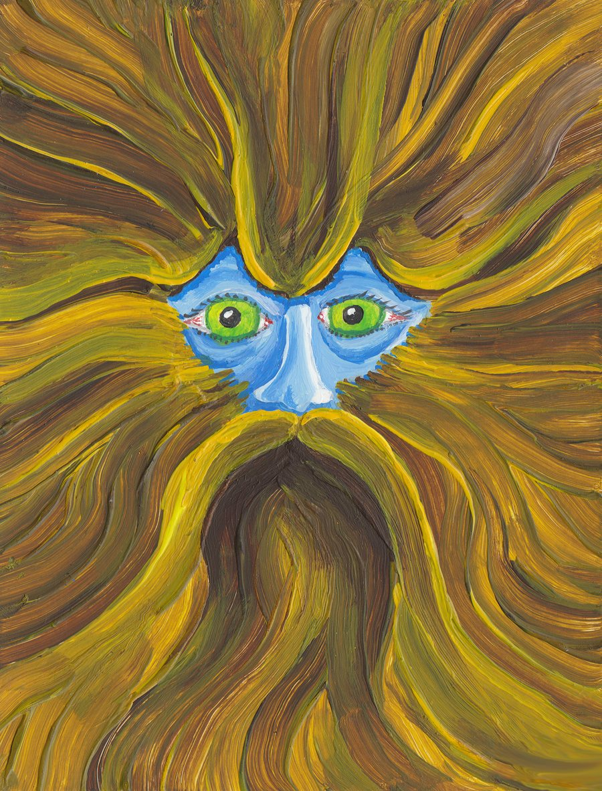

Every finding, traceable to the byte.
Kokino Forensic Toolkit is an open-source digital forensics workbench for disk images. One portable program with a browser interface, on Windows, Linux and macOS, alone on a workstation or for a whole lab.
Give it an E01, AFF4, raw or virtual disk, a disc image, a logical image (AD1, AFF4-L) or a triage collection, and it reads every volume down to the last record, live and deleted, brings back what was erased, and rebuilds what happened on the machine. Every finding links to the bytes it came from, and every examiner action lands in a hash-chained audit log.

What it reads
Images and volumes
E01 and Ex01 (with their stored hashes checked), AFF4 (striped and sparse images too, with the case notes and read errors they recorded), raw and split raw, VHD, VHDX and VMDK with snapshot chains (ESXi snapshots too), ISO and UDF discs, including CD-R and DVD-RW written in sessions. BitLocker volumes unlocked with a password, recovery password or startup key; every Volume Shadow Copy as a volume of its own.
File systems
NTFS, FAT12/16/32, exFAT, ext2/3/4, HFS+, APFS, ISO 9660 and UDF: every record, live and deleted, with deleted names recovered from slack, journals and old tree nodes.
Windows
Registry (deleted keys too), event logs, Prefetch, LNK, Jump Lists, ShellBags, ShimCache, Amcache, BAM, scheduled tasks, the NTFS change journal, and SRUM: network use, time each program was in the foreground and in use, and the battery.
Linux and macOS
Accounts, logons, auth and system logs, journald, cron, systemd, shell histories and SSH keys; macOS accounts, launchd persistence, quarantine events, KnowledgeC, FSEvents and Safari.
Web and email
Chrome, Edge, Firefox, Safari and Internet Explorer history, downloads and cookies, records carved from free space; Outlook PST and OST (deleted messages recovered from the index and the file's free space too), Apple Mail, mbox and .eml.
Collections
Velociraptor, KAPE and UAC triage collections, FTK Imager AD1 and AFF4-L logical images, and plain folders, read as file systems with every artifact found where it was on the collected system.
Analysis
Timelines (one per item and one for the whole case), full-text search, file carving (JPEGs split in two or three pieces, and PNGs, PDFs and Office documents in two, joined again), hash sets from NSRL, HashKeeper, hashdeep and plain lists, picture forensics, hash sets and hash analysis, anti-forensics indicators with a scored likelihood that explains itself.
Case work
Correlation across evidence items, a watchlist that sweeps a case for known indicators (pasted, STIX 2.1 or MISP) and marks what is new, plugins for artifacts Kokino does not read itself (their rows on the timelines and in the watchlist), bookmarks and tags, case reports in HTML and Word, CSV and JSON exports.
Built to be trusted
Evidence opened read-only; accounts, roles and a hash-chained audit log; checked against NIST, Digital Corpora and AFF4 reference images (the NIST ones every week, automatically); every parser fuzzed; no unsafe Rust; a signed SBOM and build provenance with every release.
Download
The latest release, with its notes and every file, is on GitHub Releases.
Windows 10 and 11
64-bit (x64). The installer adds Kokino to the Start menu and upgrades an installed version in place.
Linux
x86_64. A .deb for Debian, Ubuntu and Kali, or a .tar.gz for anything else. Start with kokino serve.
macOS 12 and later
One universal DMG for Intel and Apple Silicon. Double-click "Start Kokino".
Check what you downloaded. Every release has SHA256SUMS.txt, a CycloneDX SBOM listing every component, and a signed build provenance attestation for every file, which ties it to the build that made it:
gh attestation verify kokino-<version>-windows-x64.msi --repo zeroscience/Kokino
The packages are not code-signed yet. On Windows choose "More info", then "Run anyway"; on macOS right-click "Start Kokino", choose Open, then Open again.
Get started
- Install and start. Kokino starts a small server on this machine (127.0.0.1) and opens your browser. Nothing is reachable from the network unless you ask for it.
- Create the first account. On first start Kokino shows a one-time setup link that creates the administrator account. Examiners and reviewers are added under Users.
- Open a case and add evidence. Pick an image, a disc, a collection or a folder. Kokino hashes it, checks it against the acquisition hash, and analyzes every volume.
- Work through it. Summary, Explorer, Timeline, System summary, Search, Carved files, Pictures, Web activity, Email and Hex, then bookmarks and the case report.
Command line
The same engine without the browser, for scripting and batch work:
kokino analyze disk.E01 --json analysis.json # summary on screen, everything as JSON kokino hash disk.E01 # MD5, SHA-1, SHA-256; checks the E01 stored hash kokino files disk.E01 --extract out/ # every file, live and deleted, with hashes kokino carve disk.E01 # carved files with offset, length and hashes kokino plugins disk.E01 --plugins plugins/ # run plugins over the files they handle kokino verify-audit <case folder> # checks the hash chain of a case's audit log
A lab server
For examiners working from their own machines. LAN mode always uses HTTPS, with your certificate or a self-signed one:
kokino serve --listen 0.0.0.0 --port 8443 --hostname forensics.lab
Documentation
Built-in wiki
Every page of Kokino is explained in its own wiki (Help, then Wiki): what each view shows, where it comes from and what it cannot tell you. It ships with the program and works offline.
On GitHub
- README: features, install, build
- Validation: results on public test images
- Security: threat model, fuzzing, reporting
- Architecture: how it is built
- Roadmap and changelog
What's next
Most of what is left waits for test data rather than code: disks from real Macs, encrypted APFS volumes and LZFSE compression, Windows Search databases and XFS images. The roadmap lists each item and what it needs; if one matters to your casework, say so.
FAQ
Is it free?
Yes. Kokino is open source under the Apache License 2.0, for any use, including commercial casework.
Does it send anything anywhere?
No. Kokino never contacts anything on its own. The only request it can make is the update check on the About page, and only when you press the button; it is recorded in the system audit log.
Can it change the evidence?
No. Evidence is only ever opened read-only. Edits in the hex view are an overlay kept in the case and applied only when you export.
How do I know the results are right?
They are checked against public test images that come with independent ground truth: NIST CFReDS deleted-file recovery images, Digital Corpora disks, and test images from the dfvfs and libyal projects. Every number is in VALIDATION.md, with the steps to repeat the check. Every parser is also fuzzed, and every commit is checked against recorded results on Windows, Linux and macOS.
Can it read an artifact it does not know?
With a plugin: a small program in any language that reads one kind of file and prints JSON rows. Kokino gives it a copy of every matching file and shows what it reports next to everything else. Plugins are off unless the server is started with a plugin folder, and every run is in the audit log with the plugin's fingerprint. Writing one is a short step-by-step in plugins/README.md, and kokino plugin-test tries a plugin on a sample file.
Can several examiners work on the same case?
Yes. Run Kokino as a lab server: examiners sign in from their own browsers, each case has its members with their roles (examiner or reviewer), and every action is in the case's hash-chained audit log.
Where are cases kept?
In a folder on the machine that runs Kokino (KokinoCases in your home folder, or the one you choose). Images stay where they are; the case keeps the analysis, bookmarks, exports and the audit log.
Why do Windows and macOS warn about the download?
The packages are not code-signed with a publisher certificate yet. Check them against SHA256SUMS.txt or verify their signed build provenance with gh attestation verify.
How do I report a bug or a security issue?
Bugs and ideas: a GitHub issue, or lab@zeroscience.mk. Security issues: privately to lab@zeroscience.mk, not in a public issue. A small sample that shows the problem helps most.
About
The name
Kokino Forensic Toolkit is named after the Kokino observatory, a Bronze Age megalithic site from around the 19th century BC near Kumanovo, in the northeast of North Macedonia. Stone markers cut into the rock there follow the Sun and the Moon on the horizon: people reading time from traces, as this toolkit does from the bytes on a disk.
The logo is a detail of a painting by Siebe Boersma, used with thanks.
Zero Science Lab
Kokino is made by Zero Science Lab in North Macedonia .
- Email: lab@zeroscience.mk
- GitHub: zeroscience/Kokino
- License: Apache License 2.0